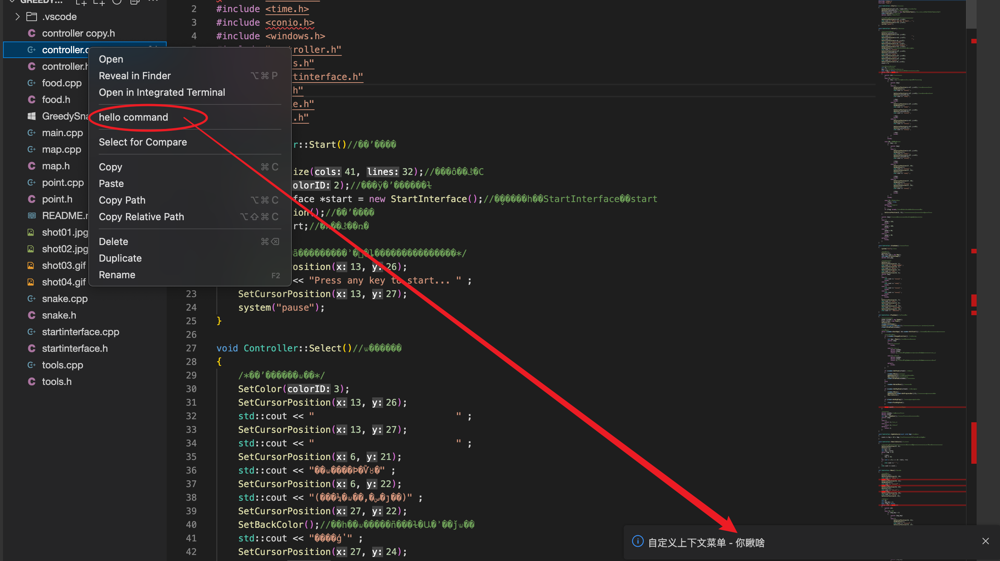

2024-03-08
自定义任意位置的鼠标右键上下文菜单
修改于: 2024-03-08说明: 即, 当鼠标右键单击时, 在单击的位置触发的菜单栏 (就像Win桌面鼠标右键触发的那玩意儿)
首先需要注册一个菜单指令(菜单的指令, 与实际的指令):
/* 先注册一个自定义的菜单 */
namespace CustomContextMenuCommand {
const category = 'custom-context-menu-command'
export const HELLO_COMMAND = Command.toDefaultLocalizedCommand({
id: 'custom:command',
category: category,
label: 'hello command'
})
}
将菜单与指令注册到贡献点:
@injectable()
export class CustomAContextMenu implements CommandContribution, MenuContribution{
constructor(
@inject(MessageService) private readonly _messageService: MessageService,
) {
}
registerCommands(commands: CommandRegistry) {
commands.registerCommand(
CustomContextMenuCommand.HELLO_COMMAND,
{execute: async (...args) => {
await this._messageService.info('自定义上下文菜单 - 你瞅啥')
}}
)
}
registerMenus(menus: MenuModelRegistry) {
menus.registerMenuAction(
[...NAVIGATOR_CONTEXT_MENU, '_1_hello'],
// CommonMenus.EDIT_CONTEXT_MENU,
{
commandId: CustomContextMenuCommand.HELLO_COMMAND.id,
label: CustomContextMenuCommand.HELLO_COMMAND.label,
}
)
}
}
这里是注册到系统左侧的导航栏位置的文件资源管理器, 预定义的菜单名为 NAVIGATOR_CONTEXT_MENU, 要在这里触发, 直接放这里即可
效果:

如何手动使用代码触发?
注入render:
// import {ContextMenuRenderer} from "@theia/core/lib/browser";
@inject(ContextMenuRenderer) readonly _contextMenuRender: ContextMenuRenderer,
调用打开:
openMenu(e) {
this._contextMenuRender.render({
menuPath: NAVIGATOR_CONTEXT_MENU,
anchor: {x: e.clienX, y: e.clientY}, // 坐标位置
args: [], // 参数
})
}
这里的调用可以放到诸如div的右键事件去, 比如:
<div class="container"
style="flex-direction: row;"
oncontextmenu={openMenu(this)}>
</div>